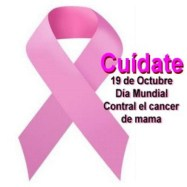

Es una enfermedad en la cual las células de la mama se multiplican sin control. el cáncer de mama puede comenzar en distintas partes de la mama. las mamas constan de 3 partes principales:lobulillos, conductos y tejido conectivo los lobulillos son glandulas que producen leche. Los conductos son los tubos que transporta la leche al pezon el tejido conectivo rodea y sostiene todas las partes de la mama
El cancer de mama puede diseminarse fuera de la mama a través de los vasos sanguíneos y los vasos linfáticos.Cuando el cáncer de mama se disemina a otras partes del cuerpo, se dice que a echo metástasis
Te as preguntado como comienza el cancer de mama? empieza a salir un bulto nuevo en la mama o en la axila (debajo del brazo) aumento del grosor o hinchazon de una parte de la mama. Enjoresimiento o descamacion en la zona del pezon
El apoyo significativo para crear conciencia para el cancer de mama y los fondos de investigación an ayudado avanzar en el diagnostico de este tipo de cancer. Los indices de supervivencia para el cáncer de mama an aumentado y el numero de muertes asociadas con esta enfermedad continua reduciendose, en su mayor parte a causa de factores como una detencion mas temprana, un nuevo acercamiento personalizado al tratamiendo y una mejor comprension de la enfermedad
Tipos de cancer de mama¿Que puede hacer para reducir el riesgo? existen muchos factores en el trancurso de la vida que pueden influir en el riesgo que tenga cáncer de mama.Algunos factores no se pueden cambiar, como hacerse mayor o los antecedentes familiares, pero usted puede disminuir el riesgo de tener cancer de mama al cuidar su salud de la siguiente manera
Algo muy importate el cancer de mama no invasivo ( estadio 0) asi como de avance local invasivo y en estadios tempranos, lo que incluye los estadios I, II y III. El estadio de cancer de mama describe donde se encuentra el cancer, cuanto a crecido si se a deseminado y asia donde. Si bien con mayor frecuencia el cáncer de mama se propaga a los ganglios linfáticos cercanos tambien puede aserlo aun más a travez del cuerpo de áreas tales como los huesos, pulmones el higado y el cerebro. Esto ae denomina cáncer de mama metastasico o en estadio IV y es el tipo mas avanzado de cancer de mama. Sin embargo la participación ganglios linfaticos por si solo no suele ser cáncer de mama en estadio IV